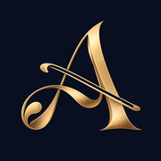
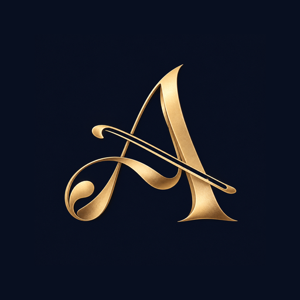

ARCO 圖示檢查
回到網站這頁檢查正式首頁的圖示引用與檔案。不會讀取或清除你的學習進度。
一般 App 圖示
512 × 512 PNG
iPhone / iPad
180 × 180 PNG
Android 裁切預覽
Maskable · 圓形示意請在已上架的網址開啟這頁。檢查通過代表檔案與引用正常，不代表既有桌面捷徑已經更新圖示。若舊捷徑未更新，先匯出進度，再重新加入主畫面測試。
這頁檢查正式首頁的圖示引用與檔案。不會讀取或清除你的學習進度。


請在已上架的網址開啟這頁。檢查通過代表檔案與引用正常，不代表既有桌面捷徑已經更新圖示。若舊捷徑未更新，先匯出進度，再重新加入主畫面測試。